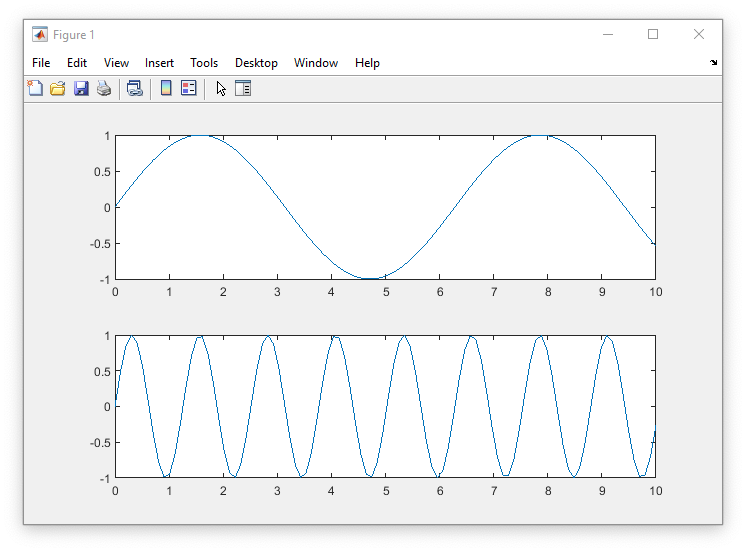

• abs(x) absolute value
• exp(x) exponential
• sin(x),cos(x) sine, cosine
• log(x),log10(x) natural logarithm, common logarithm
• sqrt(x) square root
• sign(x) signum
• round(x),fix(x) round towards nearest integer, round towards zero
• floor(x),ceil(x) round towards negative infinity, round towards plus infinity
• size(x),length(x) size of array, length of vectorUse a , to separate two commands Example:
>> a=10, 5+10 % set var a to 10 then add 5 and 10
a =
10
ans =
15Use % as the comment marker for the line
Use ; to suppress the output or separate lines in a matrix
Use : as for a range sequence for for indexing arrays
>> 1:15 % generates numbers from 1 to 15
ans =
1 2 3 4 5 6 7 8 9 10 11 12 13 14 15
>> 4:15 % generates numbers from 4 to 15
ans =
4 5 6 7 8 9 10 11 12 13 14 15whos lists in alphabetical order the names, sizes, and types of all variables in the currently active workspace.
>> whos
Name Size Bytes Class Attributes
a 1x1 8 double
ans 1x1 8 double
b 2x4 64 double In this example; there are 3 variables store: * a, a 1x1 matrix representing the number 10 * ans, a 1x1 matrix representing the number 15 * b, a 2*4 matrix
clear deletes the current workspace (clears all of the variables) clc clears the command window variables remain)
To form a matrix, assign a variable that starts with an open square bracket, each index will be split by a space, and new lines are split with a ;
Example of a 4x4 matrix that contains the following values
1 5 0 2
5 4 6 6
3 3 0 5
9 2 8 7Inputing into Matlab:
>> a=[1 5 0 2;5 4 6 6;3 3 0 5;9 2 8 7]
a = 1 5 0 2
5 4 6 6
3 3 0 5
9 2 8 7Compatible matrix opperations: Use these commands as is for vector operations * * Multiplication * / division * ^ exponentiation To do element-by-element you must add a . before the operation listed above
Example
>> a=[2 3;5 1], b=[4 7;9 6] % assign vars
a = 2 3
5 1
b = 4 7
9 6
>> a*b % matrix multiplication ans =
35 32
29 41
>> a.*b % dot product
ans = 8 21
45 6 We can a single element k by using the following template
matrix(k) Example:
>> a(3)ans = 3We can find multiple elements by using the following template matrix(k:j) Example:
>> a(2:4)ans = 5 3 1We can also count the number of elements after a certain index to use and combine with other functions: find(matrix>k)
Example:
1 5 0 2
5 4 6 6
3 3 0 5
9 2 8 7
>> find(a>3)ans = 2
4
5
6
10
12
14
15
16How to: * Set variables * plot variables using plot() command inserting variables into command and splitting with , example: plot(x,y) * use xlabel and ylabel to place labels on corresponding axis Example: xlabel('here is the text that will appear on the graph') * use title to title on the graph Example: title('This is a graph title')
Example:
x = 0:pi/10:6*pi;
y = cos(x);
plot(x,y);
xlabel('x(radium)');
ylabel('Sine of x');
title('Plot of the Sine Function');
Using multiple graphs: read more about it here: mathworks.com - subplot Using the base of the previous plot() command to get started then use the subplot command subplot(<number of y plots>,<number of x plots>,<index of current plot>)
Example from mathworks.com:
subplot(2,1,1);
x = linspace(0,10);
y1 = sin(x);
plot(x,y1)
subplot(2,1,2);
y2 = sin(5*x);
plot(x,y2)Output:

Plotting commands > plot - Plot in linear coordinates as a continuous function
> stem - Plot in linear coordinates as discrete samples
> Loglog - Logarithmic x and y axes
> Semilogx - Linear y and logarithmic x axes
> semilogy - Linear x and logarithmic y axes
> bar - Bar graph
> hist - Histogram
> polar - Polar coordinates
Customizing Plots > xlabel - Labels x-axis
> ylabel - Labels y-axis
> title - Puts a title on the plot
> grid - Adds a grid to the plot
> axis - Allows changing the x and y axes
> figure - Create a figure for plotting
> hold on - Allows multiple plots to be superimposed on the same axes
> hold off - Release hold on current plot
> close(n) - Close figure number n
> subplot(a,b,c) - Create an a × b matrix of plots with c the current figure
for var=x:y,
command
endExample:
>> for x=2;4
x
end
ans = 4
x = 2>> n = 10;>> while n < 100n = n + 10end
n = 20
n = 30
n = 40
n = 50
n= 60n = 70n = 80n = 90